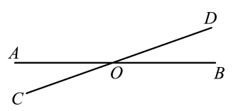
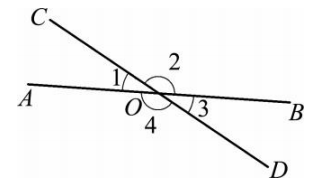
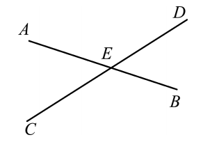
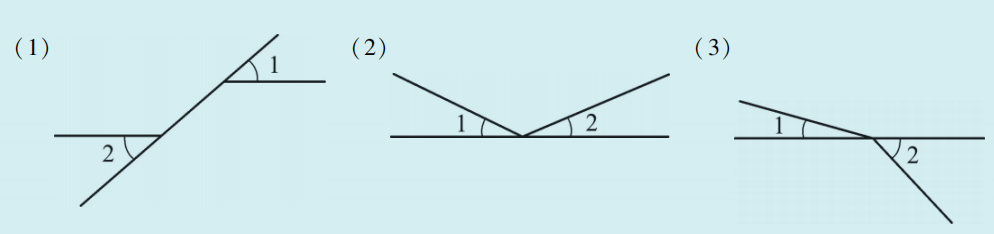
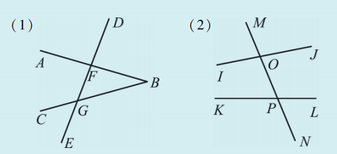
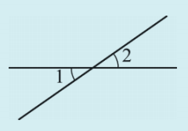

生活中剪刀、栅栏、十字路口……两条直线相交的现象随处可见。当两条直线相交时，形成了四个角，它们之间存在特殊的位置与数量关系。今天我们就来研究其中一种——对顶角。

我们可以用不同的字母表示不同的直线。如图4.1.1，两条直线 \(AB\)、\(CD\) 都经过同一个点 \(O\)，我们就说这两条直线相交于点 \(O\)，点 \(O\) 是它们的交点（intersection point）。可以说成“直线 \(AB\)、\(CD\) 相交于点 \(O\)”。

如图4.1.2，两条直线 \(AB\) 和 \(CD\) 相交于点 \(O\)，形成了 \(\angle 1\)、\(\angle 2\)、\(\angle 3\)、\(\angle 4\)。其中 \(\angle 1\) 与 \(\angle 3\) 具有相同的顶点 \(O\)，且 \(\angle 1\) 的两边 \(OA\)、\(OC\) 分别与 \(\angle 3\) 的两边 \(OB\)、\(OD\) 互为反向延长线，我们把这样的两个角叫做对顶角（opposite angles）。\(\angle 2\) 与 \(\angle 4\) 也是对顶角。
从位置关系与数量关系上看，图中还有哪些角之间存在某种关系呢？看一看，想一想，将你的发现填入下面的表中：
| 角 | 位置关系 | 数量关系 |
|---|---|---|
| \(\angle 1\) 与 \(\angle 2\) | 相邻 | 互补 |
| \(\angle 2\) 与 \(\angle 3\) | 相邻 | 互补 |
| \(\angle 1\) 与 \(\angle 3\) | 相对 | ？ |
| \(\angle 2\) 与 \(\angle 4\) | 相对 | ？ |
我们可以直观地发现图中的 \(\angle 1\) 与 \(\angle 3\) 是相对的两个角，而且似乎相等。
通过观察，猜想 \(\angle 1 = \angle 3\)，\(\angle 2 = \angle 4\)，即对顶角相等。
如图4.1.2，已知 \(\angle 1 = 30^\circ\)，求 \(\angle 2\)、\(\angle 3\)、\(\angle 4\) 的度数，并验证你的猜想。
\[ \angle 2 = 180^\circ - \angle 1 = 180^\circ - 30^\circ = 150^\circ \quad (\text{邻补角定义}) \]\[ \angle 3 = 180^\circ - \angle 2 = 180^\circ - 150^\circ = 30^\circ \]\[ \angle 4 = 180^\circ - \angle 1 = 180^\circ - 30^\circ = 150^\circ \] 由此得到 \(\angle 1 = \angle 3 = 30^\circ\)，\(\angle 2 = \angle 4 = 150^\circ\)，验证了对顶角相等。
🔷 对顶角的性质：对顶角相等。
推理：如图4.1.2，\(\angle 1\) 与 \(\angle 2\) 互补，\(\angle 3\) 与 \(\angle 2\) 互补（邻补角定义），所以 \(\angle 1 = \angle 3\)（同角的补角相等）。同理 \(\angle 2 = \angle 4\)。
如图4.1.3，直线 \(AB\)、\(CD\) 相交于点 \(E\)，\(\angle AEC = 50^\circ\)，求 \(\angle BED\) 的度数。

因为直线 \(AB\)、\(CD\) 相交于点 \(E\)，所以 \(\angle AEC\) 与 \(\angle BED\) 是对顶角。
根据对顶角相等，得 \(\angle BED = \angle AEC = 50^\circ\)。
1. 下列各图中的 \(\angle 1\) 与 \(\angle 2\) 是不是对顶角？

根据对顶角定义：有公共顶点，且两边互为反向延长线。图①②③都不是对顶角。
2. 如图，直线 \(AB, CB\) 分别与直线 \(DE\) 相交于点 \(F, G\) ，直线 \(IJ, KL\) 分别与直线 \(MN\) 相交于点 \(O, P\) ，说出各图中的对顶角。

3. 如图，\(\angle 1\) 与 \(\angle 2\) 是对顶角，\(\angle 1 = 180^{\circ} - \angle A\) ，\(\angle 2 = 35^{\circ}\) ，则 \(\angle A =\)

∵ 对顶角相等，∴ \(\angle 1 = \angle 2 = 35^\circ\)。
又 \(\angle 1 = 180^\circ - \angle A\)，∴ \(180^\circ - \angle A = 35^\circ\)，解得 \(\angle A = 145^\circ\)。
抽象思想： 从实物相交线中抽象出对顶角的几何模型。
推理思想： 通过对顶角相等进行简单的演绎推理。
转化思想： 将几何问题转化为代数方程。
✂️ 剪刀：剪刀的两刃相交，形成的两对对顶角，它们始终相等，保证了剪切的对称性。
🚥 十字路口：两条道路交叉，相对的两个区域（如东北与西南）所成的角就是对顶角，测量时可以利用对顶角相等。
📐 测量小技巧：如果想测量一个墙角（但无法直接靠近），可以测量它的对顶角，两者相等。
✨ 对顶角虽小，却是推理的第一步 ✨